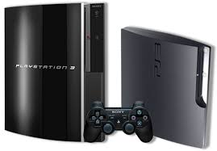

La primera consola de sobremesa de Sony fue la PS1 que fue una revolucion para la epoca. Esta consola salio a la luz en el mes de diciembre de 1994 y provoco el auge de Sony en la industria.
La segunda consola se Sony fue la PS2 la cual trajo grandes avances tecnologicos a la industria y varios de los mejores juegos que han salido hasta ahora. Esta consola salio a la luz en marzo del 2000.
La PS3 salio a la luz en noviembre de 2006, esta consola fue la primera de Sony en incorporar un servivio en linea que permitia de manera gratuita a los usuarios jugar juntos desde diferentes lugares sel mundo. Esta consola incorporo controladores inalambreicos.
La PS4 salio a la luz en febrero de 2014 despues de 8 años de desarrollo. A diferencia de la anterior consola esta no inculye un sitema de juego en linea de manera gratuita ya que sus servidores eran de pago. Implemento un crecimiento en el mando respecto a los controladores de las consolas anteriores.
La PS5 es la ultima consola desarrollada por Sony se lanzo en noviembre de 2020 y debido a la pandemia global del COVID esta consola tuvo problemas de distribucion, al igual que la mayoria de consolas de Sony salio 6 años despues de la anterior. Esta consola incorporo una nueva tecnologia de controlador que hace los juegos mas realistas
La primera consola portatil de Sony fue la PSP una consola innovadora que fue un fran exito. Esta consola se lanzo en octubre de 2004.
La PS Vita fue la segunda y ultima consola portatil de Sony debiso a que fue un fracaso en ventas y repercusion. Esta consola salio a la luz en diciembre de 2011.